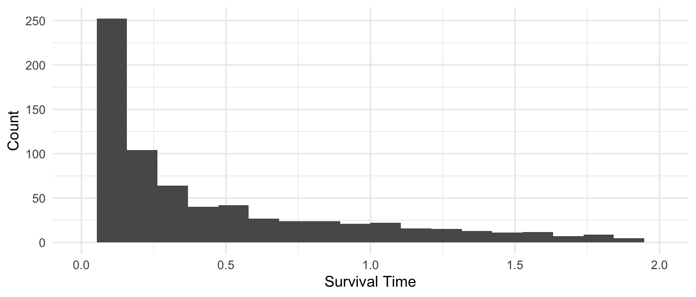
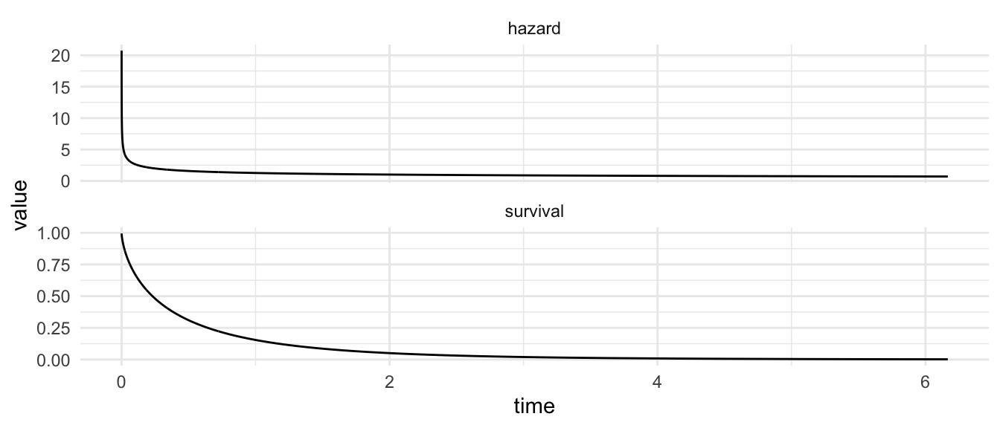
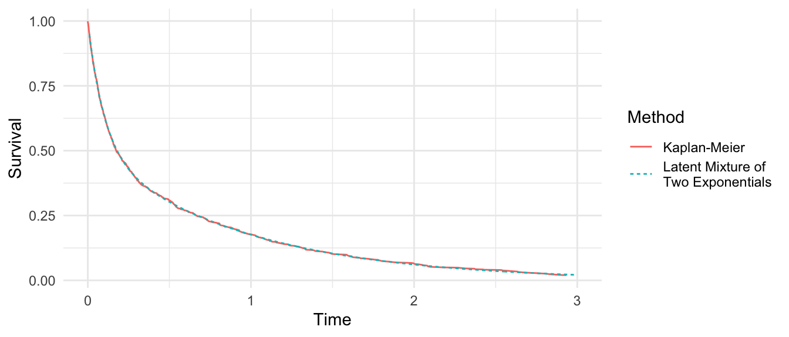

Suppose there are two population subgroups: the frail (with greater risk of death) and the robust (with lower risk of death). The code below simulates data from this hypothetical scenario (click the button to see the code).
Code
library(tidyverse)library(survival)simulated <-tibble(id =1:1e3) |>mutate(# Make equal-sized subgroups that are frail and robustsubgroup =rep(c("frail","robust"), n() /2),# Define exponential rate parameter in each subgrouprate =case_when( subgroup =="frail"~10, subgroup =="robust"~1 ),# Generate an Exponential outcomet =rexp(n(), rate = rate),# For simplicity, assume no censoringevent =1 )
Below is a visualization of the time until death in each subgroup of this simulation. The frail subgroup dies in a short time, while the robust subgroup sometimes lives much longer.
Data you observe
Now imagine you see these data, but you do not know which people are frail and which are robust. You just see the mixture distribution

Exponential model
Without knowing about the frailty issue, you might estimate an Exponential survival model with no predictors.
You might then visualize the estimated hazard function and survival function. I wrote the viz_survreg() function to make it easier to visualize these curves.
To know if this is a good model, you might compare the survival curve to a Kaplan-Meier estimate. I wrote the km_compare() function to make it easier to visualize these curves.
The comparison suggests something is wrong: the model overestimates survival at early time points, then underestimates survival at late time points. If you did not know the data generating process, you might wonder if this could arise because of a non-constant hazard function.
Weibull model
Knowing that a Weibull can model a hazard that changes with time, you might then proceed to a Weibull model.
Predictions from this model show a hazard that starts high and decreases with time,
weibull_model |>viz_survreg()

and in fact you can reject the null of the Exponential model (see summary(weibull_model) and note that the p-value on Log(scale) = 0 is very close to 0). You might also be encouraged by seeing that the predicted survival function closely matches Kaplan-Meier.
weibull_model |>km_compare()
What has happened?
The illustration above seems paradoxical.
In the data generating process, each person’s survival time was generated by an Exponential. For each person, the hazard was constant over time.
In the population average, the hazard function appears to decrease over time.
What has happened here is a consequence unmeasured heterogeneity. Some of the people are robust, and others are frail. Because the frail die first, the proportion of survivors who are robust rises with time.
The consequence of this shifting population composition is the appearance of a decreasing hazard function. When frail and robust are unmeasured, a survival model fitted to the full population will estimate one hazard that decreases over time.
How much should we worry about unmeasured heterogeneity? On one hand, all properties of the model rely on the assumption that outcomes are actually generated by the model that is selected. On the other hand, a model that only approximates the truth may still yield good population-average or subgroup survival curves even if it does not correspond to the hazard of any individual person.
Modeling unmeasured heterogeneity
If you knew the form of the unmodeled heterogeneity, you could define a model that incorporates this unmodeled heterogeneity. In certain circumstances, a correctly-specified model can overcome latent heterogeneity.
Define a model
For example, suppose we knew that simulated is actually a mixture of two exponential distributions. We could define a data generating process with this mixture.
\[
\begin{aligned}
U &\sim\text{Bernoulli}(\text{probability} = \pi) \qquad &&\text{unmeasured frailty} \\
T &\sim \text{Exponential}(\text{rate} = \lambda_1^U\lambda_2^{1-U}) &&\text{survival time}
\end{aligned}
\]
where the survival time is generated with rate \(\lambda_1\) when \(U = 1\) and \(\lambda_2\) when \(U = 0\).
We can write down the probability density function of the observed data \(t_1,\dots,t_n\).
We can also see that the pooled survival curve is incredibly close to the Kaplan-Meier estimates.
Code
survfit(Surv(t, event) ~1, data = simulated) |> broom::tidy() |>filter(time <=3) |>select(time, estimate) |>mutate(method ="Kaplan-Meier") |>bind_rows( curves |>rename(time = t, estimate = Pooled) |>select(time, estimate) |>mutate(method ="Latent Mixture of\nTwo Exponentials") ) |>ggplot(aes(x = time, y = estimate, color = method, linetype = method)) +geom_line() +labs(x ="Time", y ="Survival", color ="Method", linetype ="Method")

Latent heterogeneity in practice
In practice, it is uncommon to know the parametric form of latent heterogeneity. Thus, models that incorporate latent heterogeneity often rely on assumptions (such as a mixture of two Exponentials) that may themselves be imperfect.
The more important thing for practice is to recognize that latent heterogeneity is likely to exist in any survival model. When a hazard declines over time, it is important to recognize that this population-level result may arise from two equivalent sources
individual-level hazard declines over time, or
latent heterogeneity so that the frail die first
Data can be equally consistent with both interpretations. Nonetheless, one can still produce good survival curve estimates for the full population or in subgroups without distinguishing the two interpretations above.